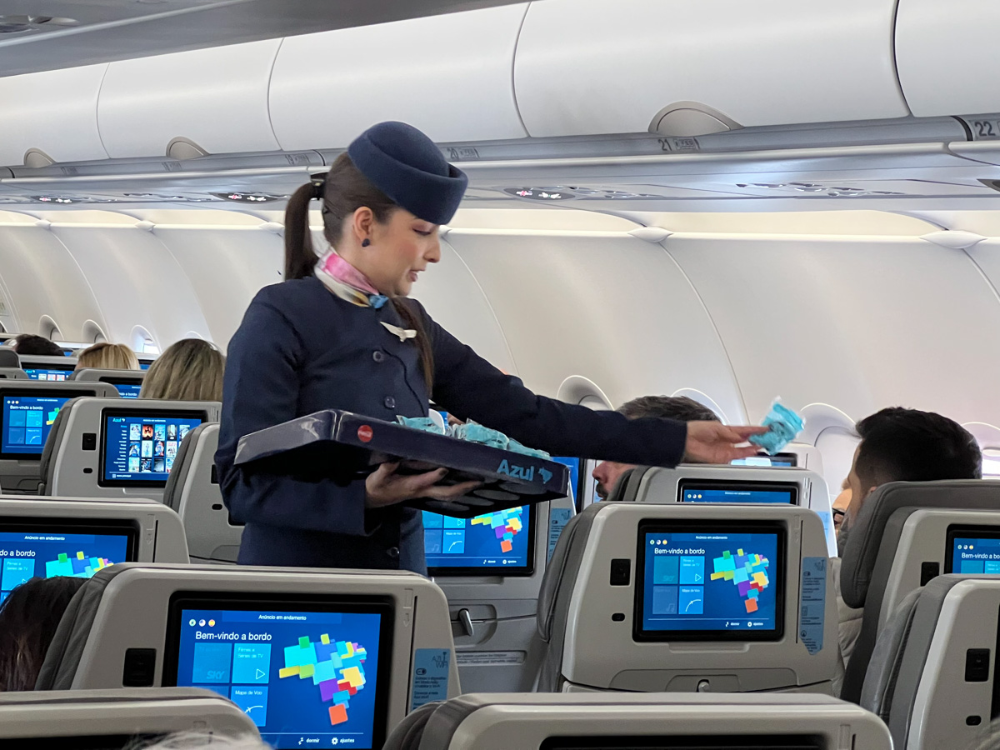

O domínio do inglês abre portas para inúmeras oportunidades profissionais em um mercado cada vez mais globalizado. Seja no campo da tradução, ensino, tecnologia ou comércio internacional, o inglês é a chave para conectar-se com diferentes culturas e mercados ao redor do mundo. Profissões como tradutores, especialistas em marketing internacional, engenheiros de software e comissários de bordo estão entre as muitas opções disponíveis para aqueles que dominam o idioma. Descubra como o conhecimento do inglês pode impulsionar sua carreira em diversas áreas e permita-se crescer em um cenário internacional.
Tradução e Interpretação
Atuação: Tradutores e intérpretes convertem textos ou falas de um idioma para outro. Podem trabalhar em diferentes áreas, como tradução técnica, literária ou interpretação simultânea.
Mercado: Muitas empresas globais, organizações governamentais e ONGs precisam de tradutores e intérpretes.
Ensino de Inglês
Atuação: Professores de inglês ensinam o idioma a alunos que falam outras línguas, tanto em escolas regulares como em escolas de idiomas.
Mercado: Escolas de idiomas, colégios, e plataformas online de ensino oferecem muitas oportunidades.
Marketing e Publicidade Internacional
Atuação: O marketing internacional envolve a criação e implementação de campanhas globais. O inglês é a língua comum para atingir mercados em diferentes partes do mundo.
Mercado: Agências de marketing e publicidade, multinacionais e empresas de e-commerce.
Turismo e Hospitalidade
Atuação: Profissionais da área de turismo trabalham como guias turísticos, agentes de viagem, gestores de hotéis e atendentes em serviços relacionados ao turismo.
Mercado: Hotéis, agências de turismo, cruzeiros, e centros turísticos internacionais.
Edição e Revisão de Textos em Inglês

Atuação: Editores e revisores de texto revisam materiais escritos para garantir precisão e fluência no inglês, especialmente em publicações acadêmicas e empresariais.
Mercado: Editoras, empresas de comunicação, empresas de tecnologia e plataformas online.
Roteirista ou Escritor
Atuação: Escritores e roteiristas que escrevem em inglês podem criar conteúdo para livros, filmes, programas de TV e sites.
Mercado: Editoras, estúdios de cinema e televisão, plataformas de streaming.
Consultoria em Comunicação Corporativa Internacional
Atuação: Especialistas em comunicação internacional ajudam empresas a gerenciar sua imagem global, desenvolver estratégias de comunicação e gerenciar crises internacionais.
Mercado: Grandes corporações, consultorias especializadas e ONGs.
Jornalistas e Assessores(as) de Imprensa
Atuação: Profissionais que cobrem eventos, escrevem reportagens e comunicados de imprensa para empresas ou órgãos de comunicação. A habilidade no inglês é essencial para cobrir notícias internacionais e lidar com empresas globais.
Mercado: Agências de comunicação, jornais, revistas, canais de TV e sites de notícias.
Gerentes de Tecnologia da Informação

Atuação: Gerentes de TI coordenam a infraestrutura tecnológica de empresas, supervisionando equipes de suporte, desenvolvimento e segurança de sistemas, com a necessidade de inglês para interagir com fornecedores e equipes internacionais.
Mercado: Empresas multinacionais, startups de tecnologia, consultorias de TI e grandes corporações.
Programadores(as) e Desenvolvedores(as) Web

Atuação: Profissionais responsáveis por criar e manter sites, sistemas e aplicativos. O inglês é fundamental, pois a maior parte das linguagens de programação e documentações estão nesse idioma.
Mercado: Startups, empresas de tecnologia, agências digitais e multinacionais.
Administradores(as) de Empresas
Atuação: Administradores gerenciam o funcionamento geral de empresas, desde operações até finanças. A fluência em inglês é essencial para trabalhar em corporações internacionais e interagir com parceiros estrangeiros.
Mercado: Empresas multinacionais, grandes corporações e consultorias de negócios.
Engenheiro(a) de Software
Atuação: Engenheiros de software projetam, desenvolvem e mantêm sistemas e aplicativos, muitas vezes usando o inglês para leitura de manuais, participar de conferências e colaborar com equipes globais.
Mercado: Empresas de tecnologia, startups, multinacionais e indústrias.
Gerente de Projetos Internacionais
Atuação: Profissionais que coordenam projetos que envolvem equipes e stakeholders de diferentes países, assegurando que prazos e orçamentos sejam cumpridos.
Mercado: Multinacionais, empresas de consultoria e organizações sem fins lucrativos.
Comissários(as) de Bordo

Atuação: Comissários de bordo atendem passageiros durante voos, oferecendo serviços e garantindo a segurança. O inglês é necessário para comunicar-se com passageiros internacionais e equipes globais.
Mercado: Companhias aéreas internacionais, voos comerciais e privados.
Pilotos(as) de Avião
Atuação: Pilotos de avião operam aeronaves comerciais e privadas. O inglês é o idioma padrão para a comunicação entre pilotos e torres de controle no mundo todo.
Mercado: Companhias aéreas comerciais, aviação privada, transporte de carga.
Tripulantes em Navios de Cruzeiro
Atuação: Tripulantes em cruzeiros garantem o bem-estar e entretenimento dos passageiros, além de desempenhar funções operacionais. O inglês é necessário para lidar com passageiros e equipes internacionais.
Mercado: Empresas de cruzeiros internacionais, navios de turismo.
Secretariado

Atuação: Secretários(as) assistem executivos em suas tarefas diárias, organizam agendas e eventos, frequentemente utilizando o inglês para lidar com documentos e correspondências internacionais.
Mercado: Empresas multinacionais, consultorias, organizações globais.
Analista de Business Intelligence (BI)
Atuação: Profissionais de BI analisam dados e geram relatórios que ajudam as empresas a tomar decisões estratégicas, com o inglês sendo útil para entender ferramentas e relatórios globais.
Mercado: Empresas de tecnologia, consultorias, corporações multinacionais.
Analista de Redes
Atuação: Analistas de redes gerenciam e garantem o bom funcionamento de redes de computadores. O inglês é necessário para configurar sistemas globais e trabalhar com documentações técnicas.
Mercado: Empresas de tecnologia, provedores de internet, grandes corporações.
Contador(a)
Atuação: Contadores cuidam das finanças de empresas, incluindo declarações de impostos e relatórios financeiros. Para empresas internacionais, o inglês é importante para lidar com normas globais.
Mercado: Escritórios de contabilidade, multinacionais, empresas de auditoria.
Representante Comercial
Atuação: Representantes comerciais vendem produtos ou serviços para outras empresas ou consumidores, frequentemente em mercados internacionais, onde o inglês é necessário para comunicação.
Mercado: Empresas de comércio, indústria, empresas de tecnologia e serviços.
Advogado(a) Especializado em Direito Internacional
Atuação: Advogados que lidam com questões de direito internacional representam clientes em disputas legais entre países ou empresas globais, utilizando o inglês para atuar em diferentes jurisdições.
Mercado: Escritórios de advocacia internacionais, empresas multinacionais, ONGs.
Especialista em Recursos Humanos em Multinacionais
Atuação: Especialistas em RH gerenciam o recrutamento e desenvolvimento de funcionários, frequentemente usando o inglês para lidar com candidatos e equipes internacionais.
Mercado: Grandes empresas, consultorias de RH, corporações multinacionais.
Agente de Câmbio

Atuação: Profissionais que realizam a compra e venda de moedas estrangeiras, auxiliando clientes na conversão de moeda e fornecendo informações sobre taxas de câmbio e regulamentações financeiras, além de oferecer consultoria em transações internacionais.
Mercado: Bancos, casas de câmbio, instituições financeiras e empresas de turismo.
Relações Públicas
Atuação: Profissionais de Relações Públicas gerenciam a imagem pública de empresas, organizações ou indivíduos, coordenando estratégias de comunicação e interação com a mídia. O inglês é essencial para lidar com empresas globais, promover eventos internacionais e se comunicar com públicos estrangeiros.
Mercado: Agências de comunicação, empresas multinacionais, organizações governamentais, ONGs e corporações globais.
Relações Internacionais
Atuação: Profissionais de relações internacionais atuam na diplomacia, comércio exterior, ONGs e organismos internacionais, promovendo a cooperação entre países e facilitando negociações globais. Eles colaboram com empresas multinacionais e instituições para fortalecer parcerias e promover a integração econômica e política internacional.
Mercado: Governos, embaixadas, consulados, empresas multinacionais e instituições internacionais.
Negócios Internacionais
Atuação: Profissionais de negócios internacionais se especializam em comércio exterior, finanças globais e gestão de operações em um ambiente global. Eles são responsáveis por estabelecer e manter relações comerciais com parceiros internacionais, frequentemente utilizando o inglês como língua de comunicação.
Mercado: Oportunidades estão disponíveis em multinacionais, bancos, empresas de comércio exterior e instituições financeiras.